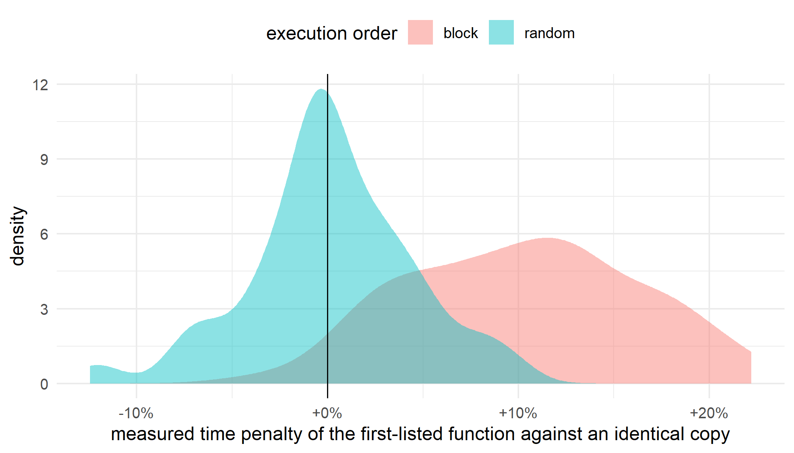
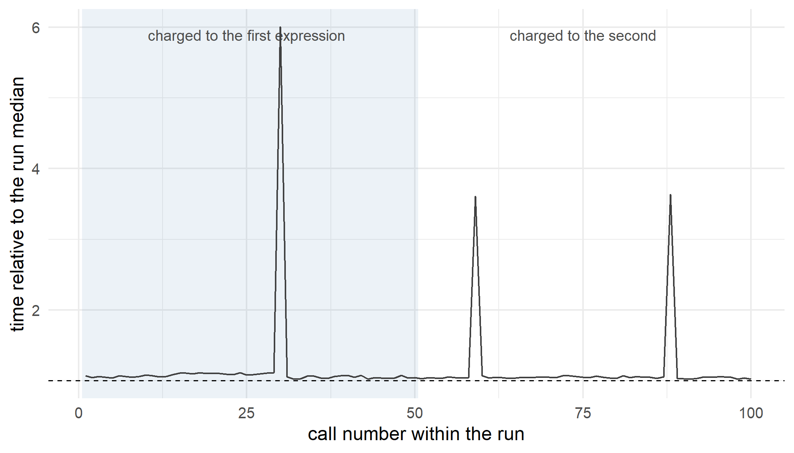

A benchmark is an experiment. It has treatments (the implementations you are comparing), units (the individual timed calls), and a response (elapsed time). Almost nobody treats it that way, and the cost is that many speed claims you read are measuring the order the code ran in rather than the code.
Here is the cheapest demonstration. I raced a function against a byte-identical copy of itself, and swapped which copy got listed first. If a slot rather than a function is winning, the first slot wins either way.
library(microbenchmark)
set.seed(2026)
impl_a <- function(x) {
y <- x * 2
z <- cumsum(y)
z[length(z)]
}
impl_b <- function(x) {
y <- x * 2
z <- cumsum(y)
z[length(z)]
}
stopifnot(identical(body(impl_a), body(impl_b)))
x <- runif(1e5)
# Ratio of the median time of whichever function was LISTED FIRST to the second.
# Anything other than 1 is an artifact, because the two functions are the same code.
race <- function(order, first) {
mb <- if (first == "a") {
microbenchmark(a = impl_a(x), b = impl_b(x), times = 40,
control = list(order = order))
} else {
microbenchmark(b = impl_b(x), a = impl_a(x), times = 40,
control = list(order = order))
}
m <- tapply(mb$time, mb$expr, median)
as.numeric(m[[first]] / m[[setdiff(c("a", "b"), first)]])
}
reps <- 40
race_grid <- expand.grid(rep = seq_len(reps), order = c("block", "random"),
first = c("a", "b"), stringsAsFactors = FALSE)
race_grid$ratio <- mapply(race, race_grid$order, race_grid$first)| Ordering | Listed first | Mean ratio | 95% CI | p vs 1 | First slot slower |
|---|---|---|---|---|---|
| block | a | 1.1100 | [1.0908, 1.1291] | 3.2e-14 | 100% |
| block | b | 1.0955 | [1.0767, 1.1144] | 1.2e-12 | 95% |
| block | either (pooled) | 1.1027 | [1.0895, 1.1160] | <2e-16 | 98% |
| random | a | 1.0026 | [0.9885, 1.0167] | 0.71 | 40% |
| random | b | 1.0002 | [0.9864, 1.0140] | 0.97 | 52% |
| random | either (pooled) | 1.0014 | [0.9918, 1.0110] | 0.77 | 46% |
Under block ordering the function listed first is measured as 10.3% slower than an identical copy of itself, and it comes out that way in 98% of the races. The gap survives the swap, so it belongs to the slot and not to the function. Under random ordering the same comparison returns a mean ratio of 1.0014, interval [0.9918, 1.0110], which is the null answer a benchmark of identical code is supposed to give.

Figure 1: Two identical functions raced against each other under each ordering. Randomizing the execution order centres the distribution on zero. Block ordering moves it off.
The two benchmarking packages in common use disagree about this, and neither announces it. You can just look, by making the expressions log themselves.
run_log <- character()
tag_a <- function() {
run_log <<- c(run_log, "a")
NULL
}
tag_b <- function() {
run_log <<- c(run_log, "b")
NULL
}
run_log <- character()
invisible(bench::mark(a = tag_a(), b = tag_b(), iterations = 6, check = FALSE))
order_bench <- paste(run_log, collapse = " ")
run_log <- character()
invisible(microbenchmark(a = tag_a(), b = tag_b(), times = 6))
order_mb <- paste(run_log, collapse = " ")
cat("bench::mark :", order_bench, "\n")
## bench::mark : a b a a a a a a b b b b b b
cat("microbenchmark :", order_mb, "\n")
## microbenchmark : a b b a a b a b a b a bbench::mark calls each expression once up front and then runs every iteration of the first
before it touches the second. That is block ordering, and there is no argument to change it.
microbenchmark shuffles, because its control$order defaults to "random". That default is the whole
difference between the two halves of the table.
A constant bias would be survivable, because you could measure it once and subtract it off. Here is the same race run in eight fresh R sessions, each one started clean.
library(callr)
one_session <- function(seed) {
callr::r(function(seed) {
library(microbenchmark)
set.seed(seed)
impl_a <- function(x) {
y <- x * 2
z <- cumsum(y)
z[length(z)]
}
impl_b <- function(x) {
y <- x * 2
z <- cumsum(y)
z[length(z)]
}
x <- runif(1e5)
race <- function(order) {
mb <- microbenchmark(a = impl_a(x), b = impl_b(x), times = 40,
control = list(order = order))
m <- tapply(mb$time, mb$expr, median)
as.numeric(m[["a"]] / m[["b"]])
}
# Interleaved, so both orderings meet the same session conditions.
out <- vapply(1:16, function(i) c(block = race("block"), random = race("random")),
numeric(2))
rowMeans(out)
}, args = list(seed = seed))
}
sessions <- as.data.frame(t(vapply(1:8, one_session, numeric(2))))
round(sessions, 4)
## block random
## 1 1.0087 0.9877
## 2 1.0087 1.0093
## 3 1.0049 0.9989
## 4 1.0178 0.9995
## 5 1.0097 0.9895
## 6 1.0173 0.9994
## 7 1.0304 1.0000
## 8 1.0074 1.0064Same code, same machine, same afternoon. The artifact appears in all eight, leaning the way this document did, at +0.5% to +3.0%.
Now compare the session you are reading the output of. The table at the top of this page came out of the R session that knitted it, and it measured 10.3% against the 1.3% these clean sessions average, a factor of 8. A long-lived session with a big heap is a much worse place to benchmark than a fresh one, and a knitted report or a day-old RStudio session is exactly that. The randomized column stays inside -1.2% to +0.9% throughout. It does not care.
The first expression is not special. Machine speed drifts over the life of a benchmark, and block ordering hands the first half of that drift to one expression and the second half to the other. Time one expression alone and the structure is already there.
n <- 100
reps_d <- 200
prof <- matrix(NA_real_, reps_d, n)
half <- numeric(reps_d)
half_mean <- numeric(reps_d)
first <- 1:(n / 2)
second <- (n / 2 + 1):n
for (i in seq_len(reps_d)) {
tt <- as.numeric(microbenchmark(impl_a(x), times = n)$time)
prof[i, ] <- tt / median(tt)
half[i] <- median(tt[first]) / median(tt[second])
half_mean[i] <- mean(tt[first]) / mean(tt[second])
}
t_half <- t.test(half, mu = 1)
c(median_based = mean(half), mean_based = mean(half_mean),
ci_low = t_half$conf.int[1], ci_high = t_half$conf.int[2])
## median_based mean_based ci_low ci_high
## 1.019666 1.016283 1.011671 1.027661One expression, one hundred consecutive calls, no competitor. The first fifty calls run 2.0% slower than the second fifty and the interval clears 1 (p = 2.5e-06). That points the same way as the head to head race, as it should if the race reads position not code.

Figure 2: Mean time by position within a run, normalised to the run median and averaged over 200 runs. The regular spikes are garbage collection. Block ordering splits this sequence down the middle and charges each half to a different expression.
There are two shapes here. A few calls cost up to 6.0 times the median, spaced about 29 calls apart, which is garbage collection on a cycle. Underneath them the baseline drifts on its own. Medians step over the spikes and means do not, so the two read different things, and here they agree: 1.0197 against 1.0163. The effect survives either summary statistic. Neither shape is a property of the code, and block ordering hands the first half of both to whichever expression you listed first.
Multiplication against addition is a comparison people actually run. The move that makes it readable is to drop a copy of one candidate into the same benchmark as a negative control.
xx <- runif(1e6)
reps_r <- 40
r_mul <- r_null <- numeric(reps_r)
for (i in seq_len(reps_r)) {
mb <- microbenchmark(add = xx + xx, mul = 2 * xx, add_copy = xx + xx, times = 40)
m <- tapply(mb$time, mb$expr, median)
r_mul[i] <- m[["mul"]] / m[["add"]]
r_null[i] <- m[["add_copy"]] / m[["add"]]
}
rbind(`2 * x vs x + x` = c(mean = mean(r_mul), t.test(r_mul, mu = 1)$conf.int,
worst_single_run = max(abs(r_mul - 1))),
`x + x vs x + x` = c(mean = mean(r_null), t.test(r_null, mu = 1)$conf.int,
worst_single_run = max(abs(r_null - 1))))
## mean worst_single_run
## 2 * x vs x + x 0.9566814 0.9288028 0.9845601 0.2566742
## x + x vs x + x 1.0128313 0.9816652 1.0439974 0.23829842 * xx really is faster than xx + xx, by 4.3% on average, and across 40
randomized races the interval [0.929, 0.985] clears 1
comfortably. The control row is the useful part. Two identical expressions in the same benchmark
were off by as much as 23.8% in a single run, which is
larger than the effect, so one run cannot resolve this comparison. That is your resolution limit for this machine on this day, and it costs one line.
This is not an R problem. It is a problem with running all of A and then all of B, which is what timing tools do by default in every language.
import random
import statistics
import time
import numpy as np
rng = np.random.default_rng(0)
xp = rng.random(100_000)
def impl_a():
y = xp * 2.0
return np.cumsum(y)[-1]
def impl_b():
y = xp * 2.0
return np.cumsum(y)[-1]
def timed(f):
t0 = time.perf_counter_ns()
f()
return time.perf_counter_ns() - t0
def race(order, n=40, seed=0):
plan = [("first", impl_a)] * n + [("second", impl_b)] * n
if order == "random":
random.Random(seed).shuffle(plan)
t = {"first": [], "second": []}
for label, f in plan:
t[label].append(timed(f))
return statistics.median(t["first"]) / statistics.median(t["second"])
for _ in range(30):
_warm = impl_a()
reps = int(r.py_reps)
res = {o: [race(o, seed=i) for i in range(reps)] for o in ("block", "random")}
for o in ("block", "random"):
v = res[o]
m = statistics.mean(v)
se = statistics.stdev(v) / len(v) ** 0.5
print(f"{o:7s} mean {m:.4f} 95% CI [{m - 1.96 * se:.4f}, {m + 1.96 * se:.4f}]"
f" sd {statistics.stdev(v):.4f}")
## block mean 0.9966 95% CI [0.9882, 1.0051] sd 0.0335
## random mean 0.9994 95% CI [0.9951, 1.0037] sd 0.0170
print(f"variance ratio, block over random = "
f"{statistics.variance(res['block']) / statistics.variance(res['random']):.2f}")
## variance ratio, block over random = 3.89The symptom differs and the diagnosis does not. NumPy does not allocate through R’s collector, so the centre of the Python distribution sits close to 1. What block ordering costs there is precision. Randomizing shrinks the variance by the factor printed above, because consecutive calls inside a block are correlated, and a block of 40 correlated calls is worth far fewer than 40 independent ones.
microbenchmark at its default, or
control = list(order = "random") if you have changed it. bench::mark cannot do it, so reach
for it because of its memory accounting rather than for close races.callr::r() gives
you a clean session in one line.One machine, one operating system, one R build, one afternoon. The percentages are this machine talking rather than a constant of nature. What transfers is the structure: block ordering aliases within-run drift onto the comparison, randomizing removes the alias for free, and a negative control tells you what your setup can resolve.
The gap between the loaded session and the clean ones is measured but not explained. Heap size is the obvious suspect, but adding ballast to a clean session did not reproduce it, so something else is doing the work.
I also did not test whether the numbers bench::mark prints inherit this as badly. It uses a
different timer and reports the minimum alongside the median, and a minimum is far more robust to a
spike than a median is. That deserves its own post.
Randomization, blocking, negative controls, and enough replication to see the effect you care about are not benchmarking ideas. They are experimental design, and they are the subject of Experimental Design, volume 4 of A Guide on Data Analysis.